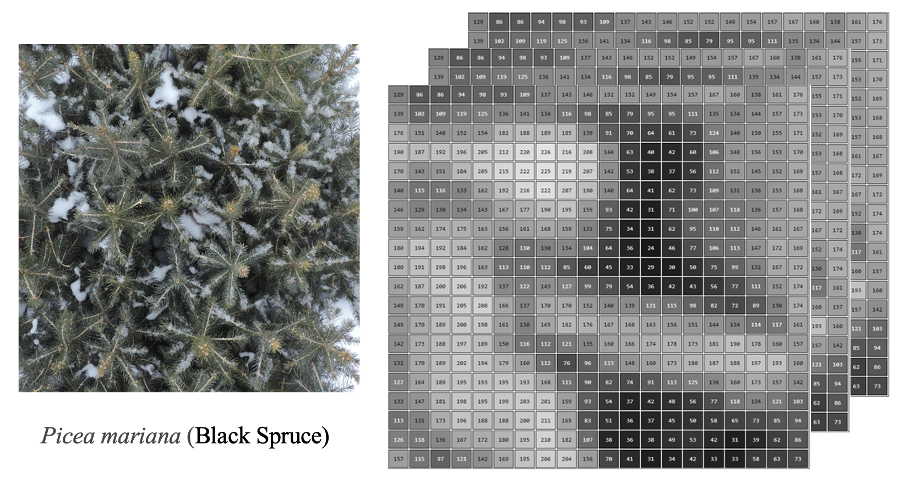
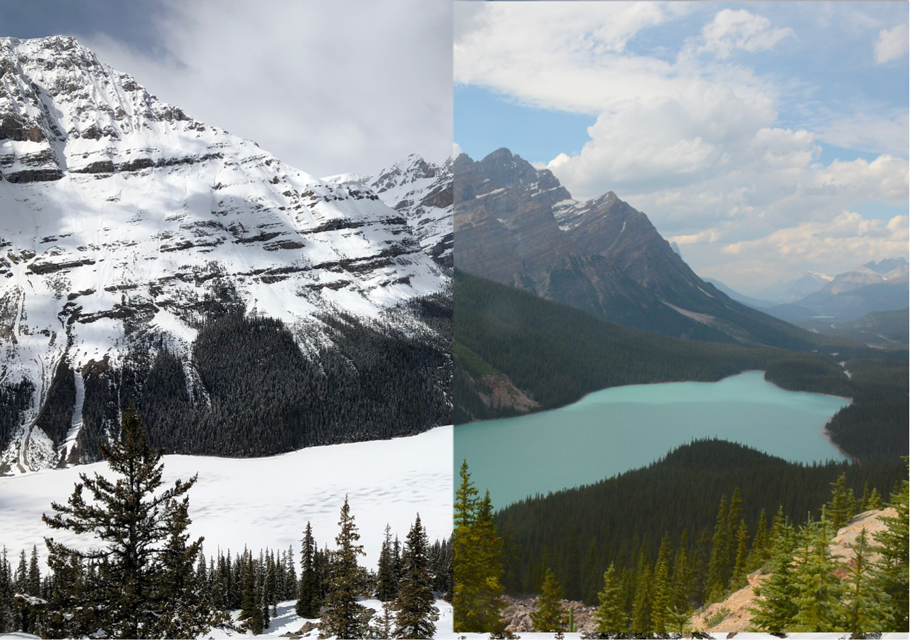
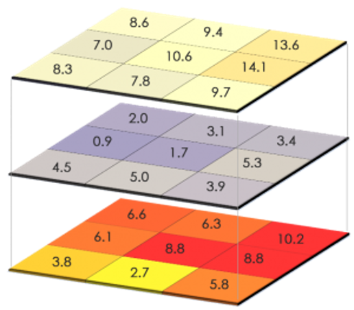
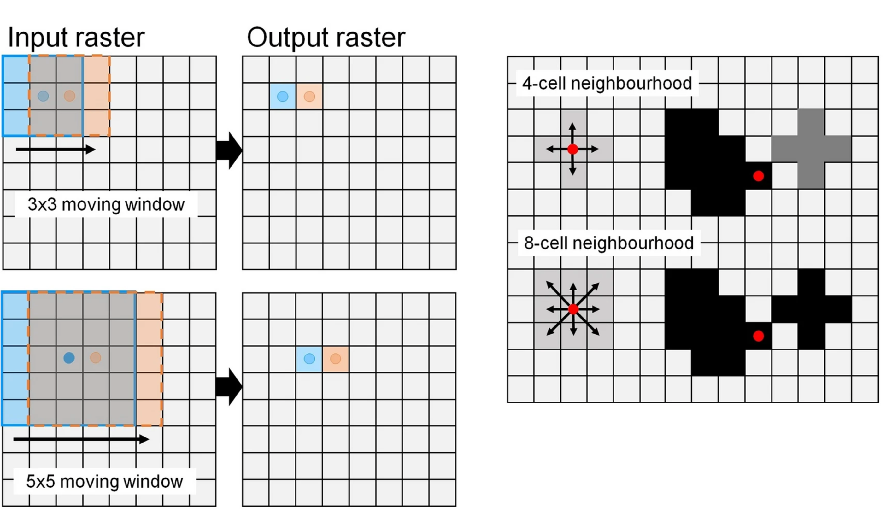
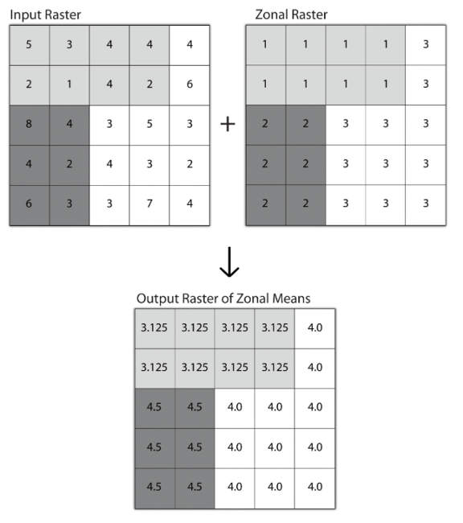
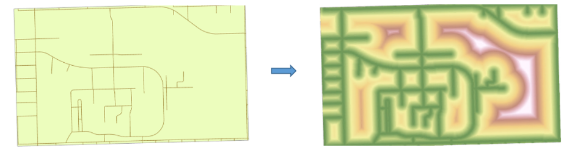

9 Spatial Analysis Basics: Raster
Understanding rater analysis method in context of matrix operations
Conduct local-focal-zonal-global analysis
Raster data utilizes the continuous field view to represent the real world by using a matrix of equally spaced cells (aka pixels), with each cell containing a value representing information. Thus, spatial analysis methods applied to raster data are essentially operations applied to a matrix or a series of matrices Figure 9.1.

In this case, raster analysis is closely linked to digital image analysis, both of which rely on matrix operations applied to grid-based data. While digital image analysis focuses on extracting information from pixels (e.g., pattern recognition, edge detection), raster analysis focuses on exploring spatial patterns, relationships, and processes across landscapes. In fact, many of the raster analysis methods described below are used in digital image analysis, but a different name might be applied Figure 9.2.

Raster data can be analyzed using mathematical, logical, and conditional operations to extract the spatial information and examine spatial relationships. Depending on how these operations are applied, raster analysis can be grouped into four major types, including local, focal, zonal, and global analysis.
9.1 Local analysis
Local analysis applies operations to each individual cell independently, using only the value stored in that cell. This means the calculation or transformation does not depend on neighboring cells or any other part of the raster. The operations can be applied to one raster layer such as applying simple mathematical operations to each cell (converting temperature from °C to °F) or combining information from multiple layers, such as calculating annual mean air temperature using monthly or daily temperature. In summary, local analysis is used to modify or classify data on a cell-by-cell basis Figure 9.3.

9.2 Focal analysis
Focal analysis examines each cell in relation to its immediate neighbors within a specified neighborhood or moving window, such as a 3×3 or 5×5 cell block Figure 9.4. Unlike local analysis that can be applied to multiple layers, focal analysis works on one raster layer by calculating a new value based on a statistic of the defined surrounding area (the neighborhood). By analyzing the surrounding cells, focal operations can identify local patterns and trends Figure 9.4.

9.3 Zonal analysis
Zonal analysis groups cells into zones or regions that share a common characteristic, often defined by another raster or vector dataset. A zone is defined as all areas in the zone definition layer that have the same value. The areas can be either connected, disconnected, or both (do NOT have to be contiguous). Then zonal operations are applied on a per zone basis by calculating summary statistics or performs computations on all cells within each zone. A single output value is computed based the value raster for every zone in the input zone dataset Figure 9.5. One example of zonal analysis application is to calculate the average rainfall within different watershed boundaries or the total vegetation cover within administrative regions. Zonal analysis helps link spatial patterns to meaningful geographic units and supports decision-making at those scales.

9.4 Global analysis
Global analysis considers the entire raster dataset as a whole, assessing spatial relationships or patterns across all cells simultaneously. Global analysis applies a single statistic, such as mean, median, sum etc., for the entire rater layer, like the mean temperature or total population for an area. Global analysis can also be used to determine connectivity or flow path across terrain (details in Digital Terrain Analysis). Global operations are critical for understanding broad-scale patterns and making landscape-level inferences.
Another analysis that is relevant to global analysis is called distance analysis, in which computes distance from each cell to a feature or a set of features (it has some characteristics with global operations). Distance analysis is used to explore spatial relationships and proximity patterns Figure 9.6. Unlike other analysis methods (local, focal, zonal) discussed here, distance analysis considers the spatial arrangement of other features but not the cell’s own value. Depending on the purpose, distance can be measured in either Euclidean distance and cost-weighted distance (distance adjusted for factors such as slope, land cover type, or travel speed).

In summary, local analysis is operated at per cell basis, focal analysis works the cell and its neighbors, and zonal analysis requires a second layer to define the zones.
Try to think raster analysis a “GIS-twin” of digital image analysis. Then, how to use raster analysis to achieve juxtaposition shown in Figure 9.2?
9.5 References
Wang R, Springer KR, Gamon JA. Confounding effects of snow cover on remotely sensed vegetation indices of evergreen and deciduous trees: An experimental study. Global Change Biology. 2023:6120-38.
Zawadzka, J.E., Harris, J.A. & Corstanje, R. A simple method for determination of fine resolution urban form patterns with distinct thermal properties using class-level landscape metrics. Landscape Ecol 36, 1863–1876 2021. https://doi.org/10.1007/s10980-020-01156-9